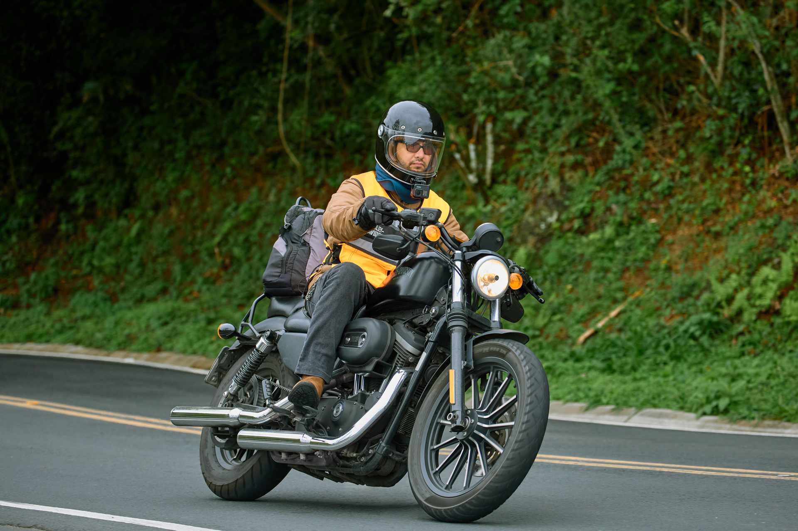
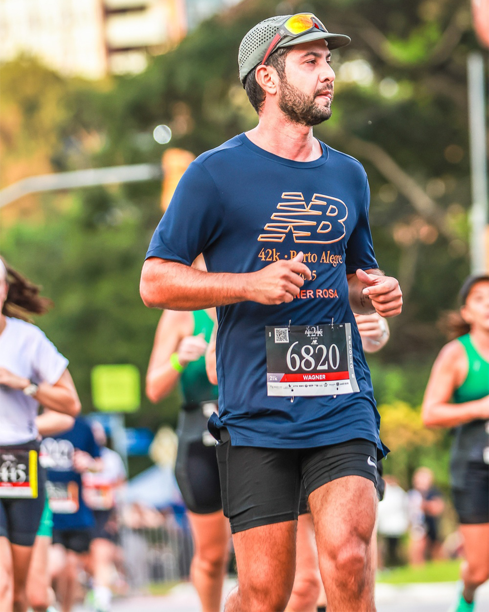

About Wagner Rosa
Background
I was born in Porto Alegre, Brazil, and began my career in communication and marketing before moving to Lisbon, where I graduated in Advertising and Marketing at the Institute of Arts and Design of Lisbon in 2016.
My professional path started in audiovisual production and graphic design, gradually evolving into web design and digital products. Over time, this transition shaped the way I approach product design: structured, system-oriented, and grounded in real implementation constraints.
I taught myself front-end fundamentals to better understand the boundaries and possibilities of interfaces. This allows me to collaborate closely with engineering teams and design solutions that are both conceptually clear and technically feasible.
Today, I focus on scalable digital systems, AI-powered products and operational workflows that require clarity, architecture and long-term thinking.
Outside of work
Outside of work, I run long distances (including a completed marathon), climb, and ride motorcycles - practices that reinforce focus, patience and consistency. Riding also led to Carburante, a native iOS logbook for motorcycles that I design and build as a personal project.

